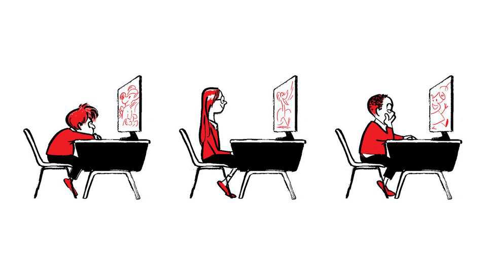
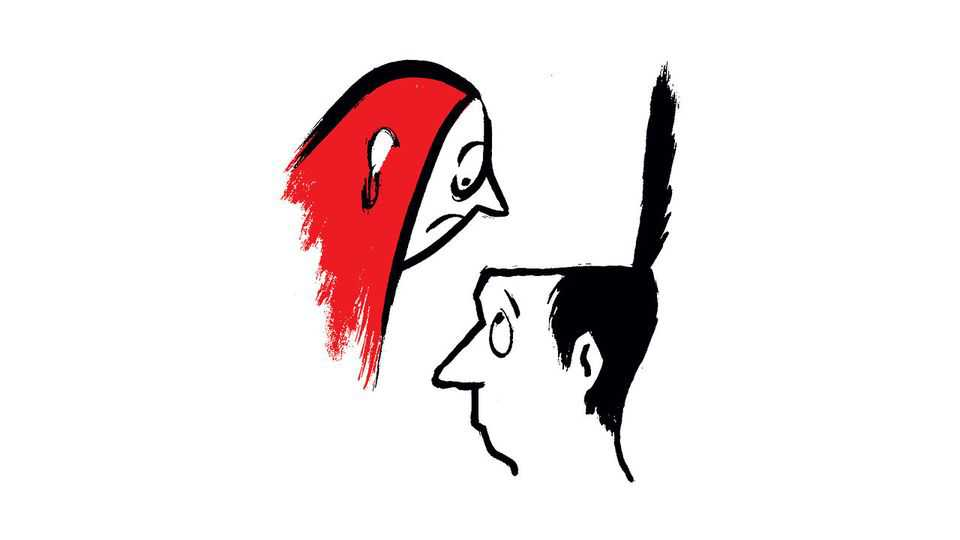

Letters | A selection of correspondence

Letters are welcome via email to letters@economist.comFind out more about how we process your letter
Education technology is profitable but mostly useless, you argue (“Failing the screen test”, January 24th). It is right to question the return on investment, but blaming the technology for poor outcomes is like blaming running shoes that are still in the box after a New Year’s resolution.
Our data show that the problem isn’t the tools. It’s the implementation. School districts that buy literacy platforms without committing to its systematic usage see no gains. But districts that ensure just one hour a week of consistent use (40 hours out of 800 total instructional hours) typically see significant reading gains. The difference isn’t the platform. It is whether schools maintain disciplined implementation with teacher training and accountability.
You note that some schools are returning to pencil and paper. Fair enough. But whether digital or analogue, learning requires consistent practice. Ed-tech vendors, as a class, oversell, but districts buying tools without the discipline or capacity to use them shouldn’t be surprised when outcomes don’t improve.
Sean RyanPresidentK-12 DivisionMcGraw HillColumbus, Ohio
I found your analysis to be empirically sound, but it would be sharpened by two refinements. First, ed tech is treated primarily as instructional software, but much of the industry’s scale and profitability comes from platforms and hardware (such as Chromebooks, iPads, and operating systems) that erode attention and degrade classroom behaviour even when no instructional software is running.
Second, educational apps may disappoint when they digitise tasks that are better done off-screen, especially for young children. By contrast, there are domains where computers are not optional but necessary, such as coding and data science. Separating infrastructure from instructional software, and distinguishing among different kinds of instructional goals, would clarify the economics of ed tech and the learning-science evidence.
Ji SonProfessor of psychologyCalifornia State University Los Angeles
The problem is not technology itself, but how ed tech is financed, and therefore what kinds of evidence it is able to produce. High-quality impact research is expensive. Rigorous evaluations require access to classrooms, ethical oversight, independent researchers and long-time horizons, often costing six figures. These costs introduce uncertainty that private investors, understandably, avoid.
As a result, ed-tech markets reward what is easiest to measure and monetise: user growth, licences and subscriptions. When firms must choose between funding the next feature that attracts customers and funding an independent evaluation where the results may be slow, uncertain or inconvenient, evidence of learning predictably loses out.
Markets deliver what they are paid to deliver. Ed tech should be treated like public infrastructure, not a consumer app. Governments underwrite roads and medical research. They should similarly fund independent research and outcomes-based contracting that ties payment to learning impact. Britain’s £23m ($31m) investment to expand the government’s research and development in ed tech is a way forward. Until evidence is financed as a public good, markets will continue to optimise for the wrong signals and learners will bear the cost.
Professor Natalia KucirkovaProfessor of early childhood and developmentOpen UniversityMilton Keynes
Recent research from the Nord Anglia Education Metacognition Project, conducted in partnership with Boston College and spanning 27 schools worldwide, offers a more nuanced perspective. Over two years and with more than 12,000 students and 5,000 teachers participating, our study found that technology’s educational impact depends less on its novelty and more on its ability to support proven learning strategies; specifically, metacognitive approaches that foster self-awareness, reflection and skill transfer.
Our results show that when digital tools are used to support meaningful reflection and embed “thinking routines” in everyday learning, students demonstrate significant gains in curiosity, creativity, collaboration and critical thinking. Students who used these approaches in lessons, and then reflected on their experiences, reported up to 21% growth in critical thinking and 20% in curiosity. Teachers observed marked improvements not only in academic outcomes but also in motivation, independence and communication.
Crucially, our study found that the quality of reflection matters far more than quantity. Technology that simply automates drill-and-practise or digitises worksheets, like the example highlighted in your article, rarely moves the needle. In contrast, platforms that enable students to capture and reflect on specific learning moments drive measurable progress in skills and mindsets.
We agree that technology cannot replace human connection, but when integrated as part of a broader pedagogical strategy, where teachers have time and training to embed metacognitive routines, technology becomes a powerful lever for change, not a distraction.
Dr Kate ErrickerGroup headEducation research and global partnershipsNord Anglia EducationLondon
Regarding your article on “Refreezing the Arctic” (January 31st), the idea has never been to start with a large-scale freezing exercise but rather a reduction in the melting rate brought about by a gradual increase of aerosol levels in summer while controlling for side-effects. This is a true low-cost programme that avoids horrendous expense and disasters in the future as ice lost is gone for ever.
This is not a question of air-pollution treaties from times long past or minuscule reductions in the ozone layer or a moving intertropical convergence zone, which will shift anyway in a warming climate. It is a question of stopping the Arctic from warming three-times faster than the rest of the planet as is the case today, which would prevent irreversible melting processes that set the world onto a track of ever-faster sea-level rises. The case for cooling is clear. The case for refreezing will be decided once we have more insight into the science behind cooling, which needs real-world tests and not just models that could be outdated within a few years.
Eduard SpielbauerBad Reichenhall, Germany
Charlemagne (January 31st) did an excellent job highlighting how the overseas colonial empires that European countries lost after the second world war have left a lasting impact on Europe. Readers may be intrigued to learn that much more ancient, truly “long lost” empires also still shape Europe in detectable ways.
Recent research has found that the parts of western Germany incorporated into the Roman Empire have higher patent rates and more startups per person than those areas of western Germany that were never conquered by Rome. Their current inhabitants also exhibit better health and psychological well-being. These contemporary inequalities may be the result of ancient investments in institutions and infrastructure, in particular roads, markets and mines.
Similar modern-day economic disparities have been found between German cities that gained free or imperial status under the Holy Roman Empire, and those which did not. The lasting economic advantage of these free and empirical cities may be due to the increased local reinvestment brought about by self-governance.
Liam McClainResearch affiliateBoston UniversityAsunción, Paraguay
Despite Donald Trump’s suggestion it was Norse explorers from Norway that settled in Greenland, not Danish ones. Norse colonists on the island were entirely descended from Norwegians and Icelanders, like Erik the Red.
Denmark’s connection to Greenland began when the Norwegian and Danish crowns unified in 1380. Nevertheless, this was merely a personal union, and Greenland was considered part of the kingdom of Norway throughout.
The first time Greenland ever became a formal Danish territory was in 1814 at the Treaty of Kiel. The Norwegian crown was given to Sweden, but the British were unwilling to grant control of major North Atlantic islands to a strengthened Sweden.
As with most European territories, the history of Greenland’s ownership is complex and convoluted.
Will LawsonOxford
You wrote about why child prodigies rarely become elite performers and observed that many adults who reach the very top were not the most outstanding performers in their youth (“Fanfare for the uncommon man”, January 17th). That observation may hold within elite groups. But the causal interpretation suggested by the article risks a statistical problem of collider bias.
Adult elite status depends on both early performance and later development, along with many other factors such as opportunity, health and support. In short, selecting only those who make it can distort what appears to predict why they made it. This does not invalidate the broader message about the value of exploration and flexibility. But it does suggest that evidence drawn solely from elite samples cannot support strong claims about the drawbacks of early excellence or specialisation.
Christian ZellerMunich
From my experience as the principal of an independent prep school I believe that highly able children at school often do not learn to fail and how to deal with this type of challenge. Life is too easy for them. To thrive and succeed in adulthood and the wider world everyone has to learn that you can’t win every battle. Less-able children will have learned this lesson over time at school, and are better mentally prepared to go on and succeed after such a failure. This can apply to any situation whether sport, music or career.
Christopher LinfordLeatherhead, Surrey

“Untying the knot” (January 17th) reviewed “Strangers” by Belle Burden on marriage infidelity. “Even the most intimate and long marriages can yield nasty surprises”, you concluded “How well do you really know the person who lies next to you in bed every night?”, you asked. This line of reasoning assumes that any person can ever truly know the full depths of another. And that such complete knowledge is even desirable in the first place. Esther Perel, a psychotherapist, views excessive closeness as a romantic death knell.
The ideal of total transparency in romantic relationships is largely a Western concept. In some cultures a degree of secrecy is seen as more respectful and helps preserve collective family harmony, a concept Ms Perel calls the secret garden. In the end, is extensive knowledge of any situation truly a safeguard against misfortune?
BEATRICE LANGFORD-BRIDGEFounex, Switzerland
As you point out in “The hole story” (January 17th), bagels come in many delicious varieties (plain, poppy, sesame, everything) and a good bagel emporium will offer a choice of toppings (cream cheese, lox, onions, and so on). I was at such an emporium in New York not long ago when a customer ordered “a plain with everything and an everything with nothing.”
ERIC EVANSBrookline, Massachusetts
Your department tasked with creating tabloid-style, eye-catching headlines that reference pop music knows no bounds. I spotted several song titles or plays on song titles in the January 10th issue. These included “All Along the Watchtower” by Jimi Hendrix (an article on Ukraine’s fortification system), “Breakin’ Up is Hard to Do” by Neil Sedaka (Germany’s industrial conglomerates), “Blood on the Tracks” by Bob Dylan (a train project) and “Video Killed the Radio Star” by the Buggles (the vodcasting trend). Maybe start a competition?
Mike NicholsonFour Marks, Hampshire